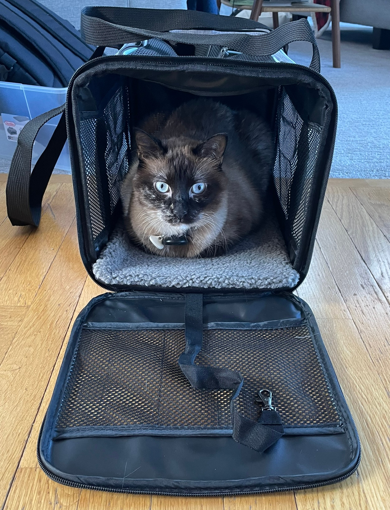
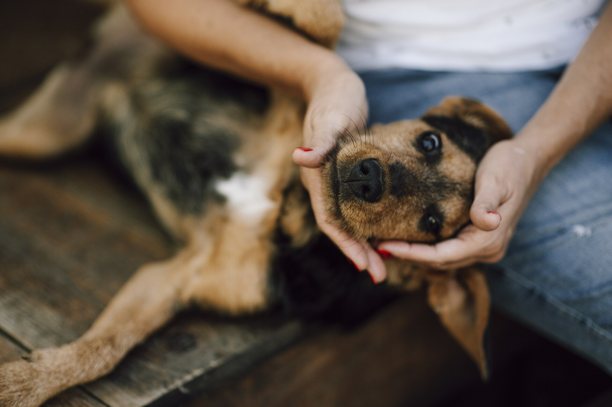

Ein Tier passt gerade nicht – und das ist okay
Die ehrlichste Entscheidung ist manchmal, noch zu warten. Das ist kein Versagen. Es ist Verantwortung.

Du bist hier, weil du dir Gedanken machst
Die Tatsache, dass du diese Seite liest, zeigt mehr Empathie für Tiere als die meisten Menschen je aufbringen. Du hast dich informiert. Du hast nachgedacht. Und vielleicht bist du zu dem Schluss gekommen: Jetzt gerade passt es nicht. Das ist keine Schwäche. Das ist Stärke.
Warum „später" manchmal die beste Antwort ist
Ein Tier braucht mehr als Liebe. Es braucht Zeit, Geld, Platz und Stabilität. Wenn dein Leben gerade im Umbruch ist – Studium, Jobwechsel, unsichere Wohnsituation, knappe Finanzen – dann ist ein Tier nicht fair. Nicht für dich, nicht für das Tier.
Das heißt nicht: niemals. Das heißt: noch nicht. Und „noch nicht" kann sich ändern.
Was du stattdessen tun kannst
Tierliebe zeigt sich nicht nur im Besitz. Es gibt viele Wege, Tieren zu helfen – ohne die Verantwortung eines eigenen Tieres:

Gassi-Service & Katzenstreicheln
Viele Tierheime und private Halter suchen Menschen, die Hunde ausführen oder Zeit mit Katzen verbringen. Du bekommst Tierkontakt, das Tier bekommt Zuwendung – ohne langfristige Verpflichtung.
Tierheime in deiner Nähe finden
Patenschaften
Für 10–30 Euro im Monat kannst du ein Tierheimtier unterstützen, das schwer vermittelbar ist – alt, krank oder einfach „zu gewöhnlich". Du bekommst Updates, kannst besuchen, trägst aber nicht die Vollverantwortung.
Mehr über TierheimtierePflegestelle werden
Tierschutzorganisationen suchen immer Pflegestellen – Menschen, die ein Tier vorübergehend aufnehmen, bis ein dauerhaftes Zuhause gefunden ist. Zeitlich begrenzt, oft mit Kostenübernahme durch den Verein.
Beispiel: Streunerhilfe PlauEhrenamt im Tierheim
Füttern, Reinigen, Spielen, Sozialisieren, Öffentlichkeitsarbeit, Fahrdienste – Tierheime brauchen helfende Hände. Du lernst dabei enorm viel über Tierhaltung und findest vielleicht dein zukünftiges Tier.
Zum Deutschen TierschutzbundDein „Später"-Plan
Wenn du weißt, dass du irgendwann ein Tier möchtest – bereite dich jetzt schon vor:
- Rücklagen aufbauen. Ein Notfallfonds von 1.000–2.000 Euro sollte da sein, bevor das Tier einzieht.
- Wohnsituation klären. Ist dein nächster Mietvertrag tierfreundlich? Hast du genug Platz?
- Wissen sammeln. Lies dich ein, besuche Seminare, sprich mit Haltern. Je mehr du weißt, desto besser wird der Start.
- Tierheime kennenlernen. Viele bieten Infoabende oder Tage der offenen Tür. Du bekommst ein Gefühl dafür, welches Tier zu dir passen könnte.
- Netzwerk aufbauen. Wer kann einspringen, wenn du krank bist oder verreist? Tiersitter, Familie, Freunde?
Die richtige Zeit erkennen
Du bist bereit, wenn:
- Deine Wohnsituation stabil ist (mindestens 2–3 Jahre Perspektive)
- Du finanzielle Puffer hast (laufende Kosten + Notfallreserve)
- Dein Alltag Zeit lässt (nicht 12-Stunden-Tage, nicht ständig unterwegs)
- Alle im Haushalt einverstanden sind
- Du dich auf 10–20 Jahre Verantwortung freust, nicht sie fürchtest
Kein Tier zu nehmen kann die tierliebste Entscheidung sein.
Diese Seite ist nicht das Nein gegen Tiere. Sie ist das Ja zu einem besseren Zeitpunkt.
Kein Tier ist besser als ein ungewolltes Tier
Jedes Jahr landen 350.000 Tiere in deutschen Tierheimen. Viele davon, weil Menschen sich überschätzt haben. Weil der Welpe doch anstrengender war als gedacht. Weil der Job sich geändert hat. Weil die Beziehung zerbrochen ist.
Wenn du sagst: „Ich warte noch" – dann bist du Teil der Lösung, nicht des Problems. Du nimmst keinen Platz im Tierheim in Anspruch. Du erzeugst keine Nachfrage bei Vermehrern. Du gibst kein Tier wieder ab.
Das ist Tierliebe. Auch wenn du gerade kein Tier hast.